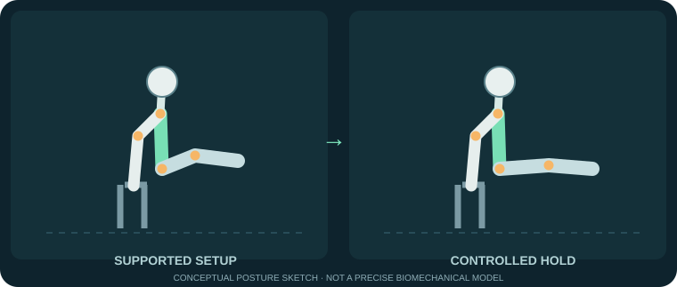

Exercise encyclopedia / Core
L-sit tuck
On secure parallettes, press through arms and lift bent knees while maintaining trunk tension.
Movement illustration

How to perform it
- Use securely supported parallettes or suitable bars.
- Press into handles and lift shoulders away from them.
- Bring bent knees toward chest while keeping trunk active.
- Hold briefly with controlled breathing, then lower feet.
Breathe continuously and use a range that feels controlled and comfortable for your body.
Why this movement matters
Trunk exercises build a capacity to control unwanted movement while breathing. A visible abdominal contraction is not a direct measure of spinal loading or exercise quality.
Progression checkpoint
Progress by extending one knee at a time while keeping support stable.
Equipment and safety
Continue breathing; shorten holds or leverage if abdominal control fades or discomfort increases.
Problem solving
Common mistakes & corrections
Correction: Use a shorter hold or toe-assisted support.
Correction: Maintain a compact tuck until basic support is reliable.
Training progression
Find your next variation
This is one possible route from a lower-demand version to a more demanding version. You can switch back whenever needed; these steps are not fixed tests or guarantees.
- Dead bug
- Hollow body hold
- L-sit tuck
Readiness guidance: Progress by extending one knee at a time while keeping support stable.
Build a practice
Where this fits in a program
L-sit tuck is a core exercise. Pair it with movements from other patterns over the training week, and choose sets or hold times you can recover from. See the Balanced full-body program for adaptable examples; there is no universally correct repetition target.
Calisthenics Atlas editorial guide · November 2026 · Original conceptual artwork · General audience education